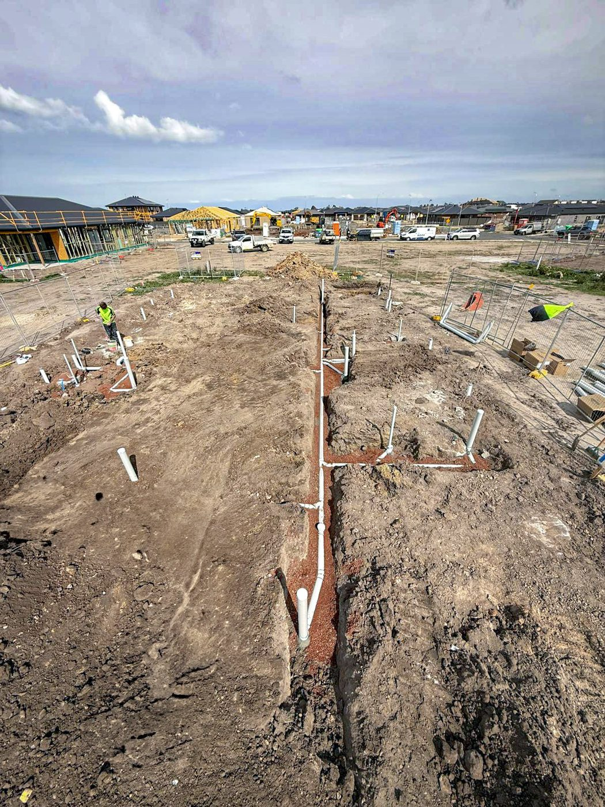

Your local team
Careful drainage work in Mount Eliza
Mount Eliza's larger blocks and established gardens are exactly the kind of sites where digging carelessly costs you. Mature trees mean root intrusion and recurring blockages, and there's usually landscaping worth protecting. We work around all of it, clearing drains, inspecting with a camera and excavating with the vac truck where it matters, then leaving the place tidy.
- Recurring and tree-root blockages cleared with jetting
- CCTV inspections before a purchase or renovation
- Vac truck digging that protects gardens and services
- Renovation and new-build sewer and stormwater
- Licensed work with compliance issued